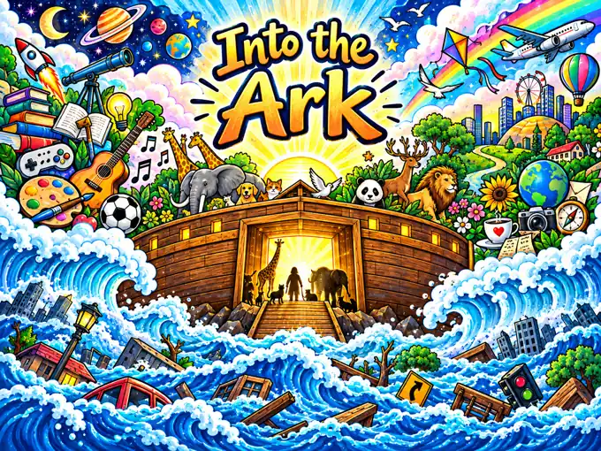
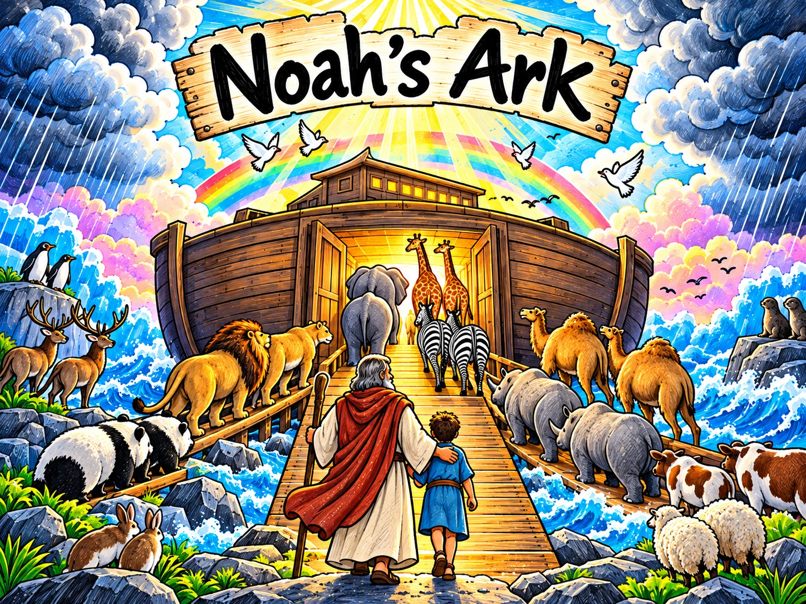
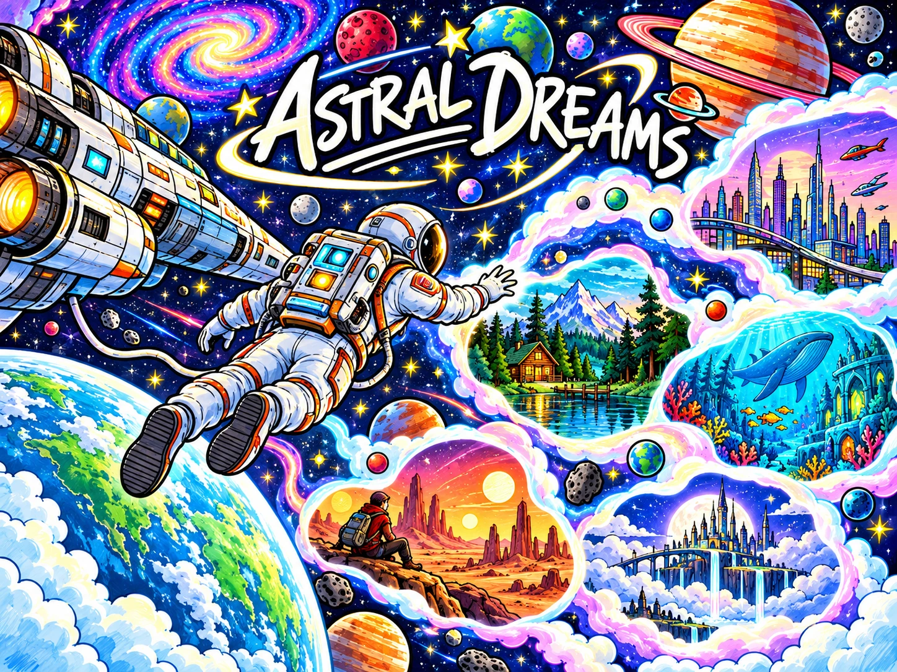
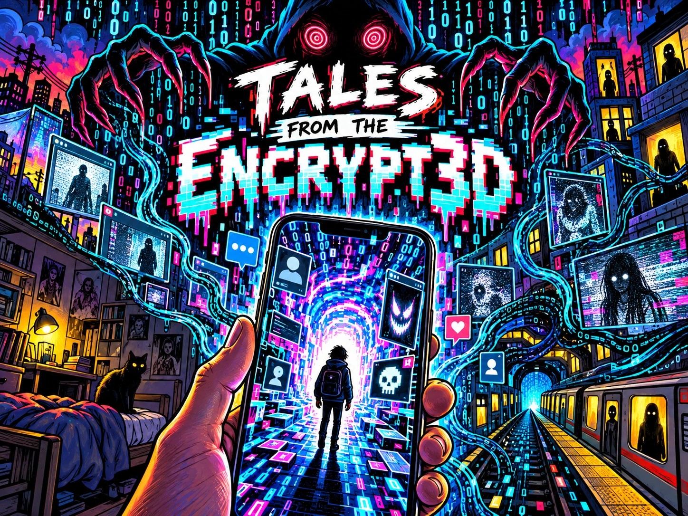

Literary Works
Read the full short stories and original poems directly on this site. Book projects include information and any verified shop or preview links.
Short Stories
Original short fiction available to read or browse.
Poems
Poems from the available manuscript collection and illustrated works.

Into the Ark
Things worth holding onto as a storm approaches.
View project information →
Noah’s Ark
Guidance and the bond between parent and child.
View project information →
Astral Dreams
Parallel possibilities and the choices we might have made.
View project information →
Heaven I & II
A series of imagined encounters with heaven.
View project information →Ascension / The Fall
Illustrated two-sided journey.
View project information →Books
Book and series profiles, with summaries and links to verified reading or shopping locations.

AIM
Explore the AIM narrative universe and its creative direction.
View project information →
Tales from the Encrypt3d
Suspense stories where digital experiences affect real-world lives.
View project information →Coquí & Tito Children’s Books
Family-friendly animal adventures, with the official shop linked on the book page.
View project information →